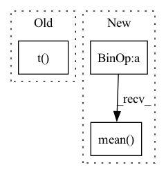

Pattern ID :39262
Before Change
// iterative updates:
for i in range(iters):
// compute distance matrix of coords and stress
dist_mat = torch.cdist(best_3d_coords.t(), best_3d_coords.t() , p=2)
stress = ( weights * (dist_mat - pre_dist_mat)**2 ).sum() / 2
// perturb - update X using the Guttman transform - sklearn-like
dist_mat[dist_mat == 0] = 1e-5After Change
batch, N, _ = pre_dist_mat.shape
his = []
// init random coords
best_stress = float("Inf") * torch.ones(batch)
best_3d_coords = 2*torch.rand(batch, N, 3) - 1
// iterative updates:
for i in range(iters):
// compute distance matrix of coords and stress
dist_mat = torch.cdist(best_3d_coords, best_3d_coords, p=2)
stress = ( weights * (dist_mat - pre_dist_mat)**2 ).sum(dim=(-1,-2)) / 2
// perturb - update X using the Guttman transform - sklearn-like
dist_mat[dist_mat == 0] = 1e-5
ratio = weights * (pre_dist_mat / dist_mat)
B = ratio * (-1)
B[:, np.arange(N), np.arange(N)] += ratio.sum(dim=-1)
// update - double transpose. TODO: consider fix
coords = (1. / N * torch.matmul(B, best_3d_coords))
dis = torch.norm(coords, dim=(-1, -2))
if verbose >= 2:
print("it: %d, stress %s" % (i, stress))
// update metrics if relative improvement above tolerance
if (best_stress - stress / dis).mean() > tol:
best_3d_coords = coords
best_stress = (stress / dis)
his.append(best_stress)In pattern: SUPERPATTERN
Frequency: 3
Non-data size: 3
Instances Fragment ID: 111500276
Project Name: lucidrains/alphafold2
Commit Name: 98e16ad2931a27f90e05df940cff72c00074028d
Time: 2021-01-17
Author: ericalcaide1@gmail.com
File Name: utils.py
M Class Name: AnonimousClass
N Class Name: AnonimousClass
M Method Name: mds_torch(5)
N Method Name: mds_torch(5)
M Parent Class:
N Parent Class:
M File Name: utils.py
N File Name: utils.py
M Start Line: 174
M End Line: 205
N Start Line: 181
N End Line: 215
Before Change
self.cluster_size.data.add_(self.eps).div_(cluster_size_sum + self.num_tokens * self.eps)
//EMA embedding weight
new_ema_w = torch.matmul(encodings.t() , z_flattened)
self.embed_avg.data.mul_(self.decay).add_(new_ema_w, alpha=1 - self.decay)
//normalize embedding weight EMA and update current embedding weightAfter Change
embed_normalized = self.embedding.embed_avg / cluster_size.unsqueeze(0)
self.embedding.weight.data.copy_(embed_normalized)
loss = self.beta * (z_q.detach() - z).pow(2).mean()
z_q = z + (z_q - z).detach()
z_q = z_q.permute(0, 3, 1, 2).contiguous()
return z_q, loss, (perplexity, encodings, encoding_indices)
Fragment ID: 111500270
Project Name: tgisaturday/dalle-lightning
Commit Name: 7a07ecfb269329aa84b6227289bec593ef24bfde
Time: 2021-07-28
Author: jamesk1228@gmail.com
File Name: pl_dalle/modules/vqvae/quantize.py
M Class Name: EMAVectorQuantizer
N Class Name: EMAVectorQuantizer
M Method Name: forward(2)
N Method Name: forward(2)
M Parent Class: nn.Module
N Parent Class: nn.Module
M File Name: pl_dalle/modules/vqvae/quantize.py
N File Name: pl_dalle/modules/vqvae/quantize.py
M Start Line: 118
M End Line: 151
N Start Line: 67
N End Line: 96
Before Change
//EMA cluster size
self.cluster_size.mul_(self.decay).add_(encodings_sum, alpha=1 - self.decay)
embed_sum = torch.matmul(encodings.t() , z_flattened)
//EMA embedding average
self.embed_avg.mul_(self.decay).add_(embed_sum, alpha=1 - self.decay)
After Change
embed_normalized = self.embedding.embed_avg / cluster_size.unsqueeze(0)
self.embedding.weight.data.copy_(embed_normalized)
loss = self.beta * (z_q.detach() - z).pow(2).mean()
z_q = z + (z_q - z).detach()
z_q = rearrange(z_q, "b h w c -> b c h w").contiguous()
return z_q, loss, (perplexity, encodings, encoding_indices)
Fragment ID: 111500280
Project Name: tgisaturday/dalle-lightning
Commit Name: e387b61c8c640b56c7cbd241d8ec60ab1f022611
Time: 2021-08-12
Author: jamesk1228@gmail.com
File Name: pl_dalle/modules/vqvae/quantize.py
M Class Name: EMAVectorQuantizer
N Class Name: EMAVectorQuantizer
M Method Name: forward(2)
N Method Name: forward(2)
M Parent Class: nn.Module
N Parent Class: nn.Module
M File Name: pl_dalle/modules/vqvae/quantize.py
N File Name: pl_dalle/modules/vqvae/quantize.py
M Start Line: 85
M End Line: 118
N Start Line: 184
N End Line: 215